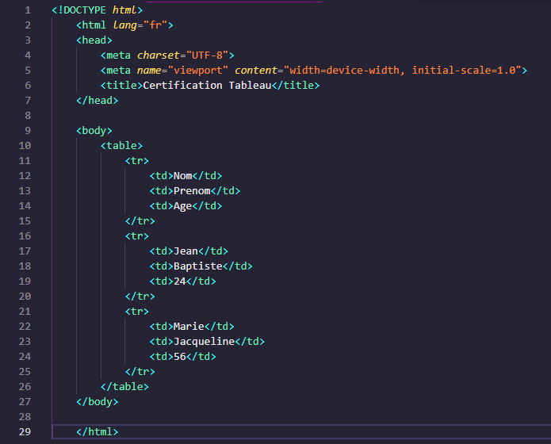

Le HTML (HyperText Markup Language) est le langage de base pour la création de sites web. Une certification en HTML offre une validation formelle des compétences dans le domaine de la conception web. Cette certification peut apporter une valeur significative à votre carrière et expèrience professionnel.

Les tableaux vous permet de retrouver rapidement et facilement des valeurs au croisement
entre différents types de données, par exemple : une personne et son âge. Les tableaux
permettent d'être insèrer avec la balise HTML < table > et se définit ligne par ligne
avec < tr > . Chaque ligne comporte des cellules < td > (cellules normales) ou < th >
(cellules d'en-tête). On peut ajouter une bordure aux cellules du tableau HTML
avec la propriété CSS border.
